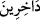

Yakinimle, hem öyle biliyorum ki
Perde kaldırılsaydı şayet aramızdaki,
Artıramazdı zerre kadar, yakinimi.
Müşâhede ve keşif sahiplerinin durumunun böyle olduğu ortaya çıktığına göre, bunu
bir türlü anlamayan kalbi perdelilerin durumu ne olacak! Bunlar müşâhede, ilim ve
mârifetçe dünyada bile birbirine denk değillerse, âhiretteki dereceleri, yakınlıkları ve
karşılaşacakları cömertlik bakımından da denk olamayacaklar, demektir. Allah
Teâlâ’dan cümlemizi hem dünya hem din hem de âhiretle ilgili isteklerini elde etmiş
muhsin ve sâlihlerden eylemesini niyâz ederiz.
60. Rabbiniz şöyle buyurdu: Bana duâ edin, kabul edeyim. Çünkü bana ibadeti
bırakıp büyüklük taslayanlar aşağılanarak cehenneme gireceklerdir.
“Rabbiniz şöyle buyurdu:” Ey insanlar! “Bana duâ edin,” beni birleyin ve sadece
bana ibâdet edin ki duânızı “kabul edeyim,” kulluk ve duânıza mükâfatla karşılık
vereyim. “Çünkü bana ibadeti bırakıp büyüklük taslayanlar,” kendilerini bana kulluk
edemeyecek kadar büyük görenler, “aşağılanarak,” küçük ve zelil olarak “cehenneme
gireceklerdir.”
“ küçük ve zelil olarak demektir.
Âyetteki “duâ” masdarı, “istemek” diye tefsir edilirse, istemekten alıkoyan “istikbâr”,
kulluk etmekten alıkoyan “istikbârın yerine konulmuş olur. Böylece ikinci istikbâr
mübalağa için birincinin yerine ikâme edilmiş olur. Ya da “kulluk etmek”ten murad,
kulluğun en üstünü olan “duâ”dır ki bu durumda da mecâzen genel bir ifâde (âmm) özel
bir ifadenin (hâs) yerine kullanılmış olur.
Kâşifî der ki: Duâdan murad istemektir. Yâni, isteyiniz çünkü benim hazînem
dopdoludur. Benim keremim isteklerinizi, arzularınızı yerine getirir. Hangi dilenci talep
ve istek elini kaldırdı da murad nakdini onun ümid eline koymadım. Hangi muhtaç istek
dilini açtı da hâcet belgesini icâbet imzâsıyla imzâlamadım. Kim irâdet eşiğine gece baş
koydu da dostun lütfu onun yüzüne bir pencere açmadı?
“Bana duâ edin, kabul edeyim” ifâdesinin tefsîrinde şu açıklamalar yapılmıştır: Siz
bana gâfil olmaksızın duâ edin, ben de size hiç ara vermeksizin icâbet edeyim. Siz bana
gizli gizli duâ edin, ben de size vefâkârca icâbet edeyim. Siz bana hatâsız duâ edin ben
de size atâ ile icâbet edeyim. Bana şartına uyarak duâ edin ki, onun şartı helâl yemektir.
Denilmiştir ki: Duâ ihtiyacın anahtarıdır; bu anahtarın dişleri ise helal lokmadır.
Hakîm Tirmizî (k.s.) diyor ki: Her kim duâ eder, ancak -tevbe ve inâbe etmek, helal